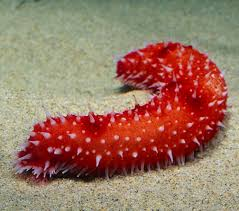
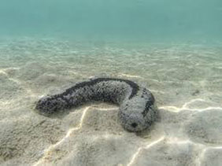
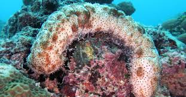
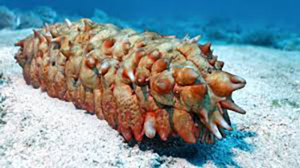
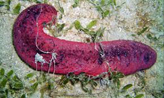
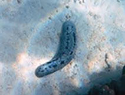
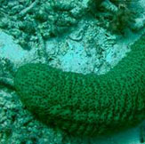

SEA CUCUMBER HOMEBASE
HISTORY
HABITAT
CLIMATE







Mission:
Protect sea cucumbers
Preserve marine habitats
Promote sustainable fishing
Conduct scientific research
Educate public and stakeholders
Advocate for legal protections
Support coastal communities
Monitor population health